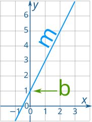
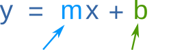
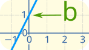
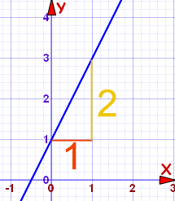
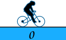
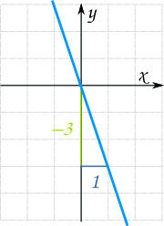
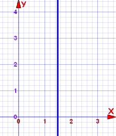

Equation of a Straight Line
The equation of a straight line is usually written this way:
(or "y = mx + c" in the UK see below)
What does it stand for?

 |
|
|
y value when x=0
(see Y Intercept) |
|
- y = how far up
- x = how far along
- m = Slope or Gradient (how steep the line is)
- b = value of y when x=0

How do we find "m" and "b"?
- b is easy: just see where the line crosses the Y axis
- m (the Slope) needs some calculation:
m = Change in YChange in X

Knowing this we can work out the equation of a straight line:
Example 1

m = 21 = 2
b = 1 (value of y when x=0)
Putting that into y = mx + b gets us:
y = 2x + 1
With that equation we can now ...
... choose any value for x and find the matching value for y
For example, when x is 1:
y = 2×1 + 1 = 3
So when x=1 we have y=3
Check for yourself that x=1 and y=3 is actually on the line.
Or we could choose another value for x, such as 7:
y = 2×7 + 1 = 15
So when x=7 we have y=15
Is the Point on the Line?
We can check if a point is on a line by substituting the x and y values into the equation.
Example: Is (4, 3) on the line y = 12x + 1?
The point is (4, 3), so x = 4 and y = 3.
Let's try them in the equation:
Yes! The equation is true, so the point (4, 3) is on the line.
Example: Is (2, 6) on the line y = 2x + 1?
The point is (2, 6), so x = 2 and y = 6.
No! 6 doesn't equal 5, so the point (2, 6) is not on the line.
Positive or Negative Slope?
Going from left-to-right, the cyclist has to Push on a Positive Slope:



Example 2

m = −31 = −3
b = 0
This gives us:
y = −3x + 0
We don't need the zero! So:
y = −3x
Example 3: Vertical Line

What's the equation for a vertical line?
The slope is undefined ... and where does it cross the Y-Axis?
In fact, this is a special case, and we use a different equation, not "y=...", but instead we use "x=...".
Like this:
x = 1.5
Every point on the line has x coordinate 1.5,
that's why its equation is x = 1.5
Rise and Run

Sometimes the words "rise" and "run" are used.
- Rise is how far up
- Run is how far along
And so the slope "m" is:
m = riserun
You might find that easier to remember.
Now Play With The Graph !
You can see the effect of different values of m (the slope) and b (the y intercept) at Explore the Straight Line Graph
Other Forms
We have been looking at the "slope-intercept" form. The equation of a straight line can be written in many other ways.
Another popular form is the Point-Slope Equation of a Straight Line.
Footnote
Country Note:
Different Countries teach different "notation" (as sent to me by kind readers):
| In the US, Australia, Canada, Eritrea, Iran, Mexico, Portugal, Philippines and Saudi Arabia the notation is: | y = mx + b |
| In the UK, Australia (also), Bahamas, Bangladesh, Belgium, Brunei, Bulgaria, Cyprus, Egypt, Germany, Ghana, India, Indonesia, Ireland, Jamaica, Kenya, Kuwait, Malaysia, Malawi, Malta, Nepal, New Zealand, Nigeria, Oman, Pakistan, Peru, Singapore, Solomon Islands, South Africa, Sri Lanka, Turkey, UAE, Zambia and Zimbabwe | y = mx + c |
| In Afghanistan, Albania, Algeria, Brazil, China, Czech Republic, Denmark, Ethiopia, France, Lebanon, Netherlands, Kosovo, Kyrgyzstan, Norway, Poland, Romania, South Korea, Surinam, Spain, Tunisia and Viet Nam: | y = ax + b |
| In Azerbaijan, China, Finland, Russia and Ukraine: | y = kx + b |
| In Greece: | ψ = αχ + β |
| In Italy: | y = mx + q |
| In Japan: | y = mx + d |
| In Cuba and Israel: | y = mx + n |
| In Romania: | y = gA + C |
| In Latvia and Sweden: | y = kx + m |
| In Serbia and Slovenia: | y = kx + n |
| In your country: | let's know! |
... but it all means the same thing, just different letters.